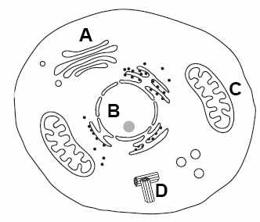
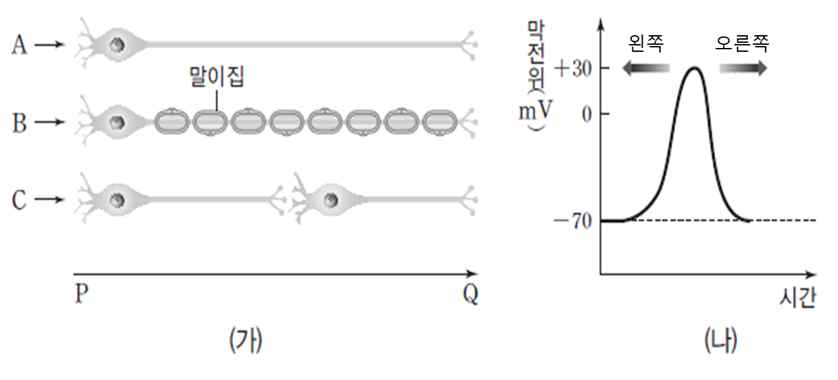

문제 6
(1) 세포 분열에서 ① B 기관이 존재하는 시기와 존재하지 않는 시기를 말하고, ② B 기관의 주요한 내용물의 상대량이 가장 적은 세포와 이유에 대해 설명하시오 (단 B기관이 없는 세포는 제외함).

(2) 2가 염색체가 무엇인지 말하고 2가 염색체 형성이 갖는 생물학적 의미에 대해 설명하시오.
(3) 그림 (가)는 3가지 뉴런의 종류와 특징을 나타낸 것이다. P 지점에서 역치 이상의 자극을 동시에 준 후, 뉴런 A의 Q지점에서 막전위의 변화를 측정하여 (나) 그래프에 나타내었다.

(1) 뉴런 A의 막전위 변화와 비교했을 때, 뉴런 B와 C의 막전위 변화는 어느 방향으로 이동할 것으로 예상되는가?
(2) 뉴런 A의 축삭 돌기의 지름이 2배 증가한다면 막전위 변화는 어느 방향으로 이동하는가?